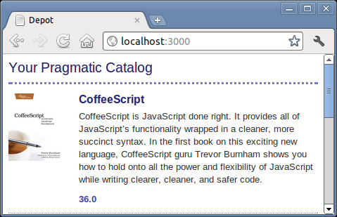

We’ve already created the products controller, used by the seller to administer the Depot application. Now it’s time to create a second controller, one that interacts with the paying customers. Let’s call it Store.
depot> rails generate controller Store index |
|
create app/controllers/store_controller.rb |
|
route get "store/index" |
|
invoke erb |
|
create app/views/store |
|
create app/views/store/index.html.erb |
|
invoke test_unit |
|
create test/functional/store_controller_test.rb |
|
invoke helper |
|
create app/helpers/store_helper.rb |
|
invoke test_unit |
|
create test/unit/helpers/store_helper_test.rb |
|
invoke assets |
|
invoke coffee |
|
create app/assets/javascripts/store.js.coffee |
|
invoke scss |
|
create app/assets/stylesheets/store.css.scss |
Just as in the previous chapter, where we used the generate utility to create a controller and associated scaffolding to administer the products, here we’ve asked it to create a controller (class StoreController in the file store_controller.rb) containing a single action method, index.
While everything is already set up for this action to be accessed via http://localhost:3000/store/index (feel free to try it!), we can do better. Let’s simplify things for the user and make this the root URL for the website. We do this by editing config/routes.rb:
| rails31/depot_d/config/routes.rb | |
Depot::Application.routes.draw do |
|
get "store/index" |
|
resources :products |
|
# ... |
|
# You can have the root of your site routed with "root" |
|
# just remember to delete public/index.html. |
|
# root :to => 'welcome#index' |
|
| * | root to: 'store#index', as: 'store' |
# ... |
|
end |
|
At the top of the file, you can see the lines added to support the store and products controllers. We’ll leave those lines alone. Further along in the file you will see a commented-out line that defines a root for the website. Either uncomment out that line or add a new line immediately after that one. All we are changing on that line is the name of the controller (from welcome to store) and adding as: ’store’. The latter tells Rails to create a store_path variable, just like the say_goodbye_path that we saw here.
Note that the comments also instruct you to delete public/index.html. Let’s do that now:[23]
depot> rm public/index.html |
Let’s try it. Point a browser at http://localhost:3000/, and up pops our web page:
It might not make us rich, but at least we know everything is wired together correctly. The page even tells us where to find the template file that draws this page.
Let’s start by displaying a simple list of all the products in our database. We know that eventually we’ll have to be more sophisticated, breaking them into categories, but this will get us going.
We need to get the list of products out of the database and make it available to the code in the view that will display the table. This means we have to change the index method in store_controller.rb. We want to program at a decent level of abstraction, so let’s just assume we can ask the model for a list of the products we can sell:
| rails31/depot_d/app/controllers/store_controller.rb | |
class StoreController < ApplicationController |
|
def index |
|
| * | @products = Product.order(:title) |
end |
|
end |
|
We ask our customer whether she had a preference regarding the order things should be listed in, and we jointly decided to see what happened if we displayed the products in alphabetical order. We do this by adding a order(:title) call to the Product model.
Now we need to write our view template. To do this, edit the file index.html.erb in app/views/store. (Remember that the path name to the view is built from the name of the controller [store] and the name of the action [index]. The html.erb part signifies an ERB template that produces an HTML result.)
| rails31/depot_d/app/views/store/index.html.erb | |
<% if notice %> |
|
<p id="notice" > <%= notice %> </p> |
|
<% end %> |
|
<h1>Your Pragmatic Catalog</h1> |
|
<% @products.each do |product| %> |
|
<div class="entry" > |
|
<%= image_tag(product.image_url) %> |
|
<h3> <%= product.title %> </h3> |
|
<%= sanitize(product.description) %> |
|
<div class="price_line" > |
|
<span class="price" > <%= product.price %> </span> |
|
</div> |
|
</div> |
|
<% end %> |
|
Note the use of the sanitize method for the description. This allows us to safely add HTML stylings to make the descriptions more interesting for our customers. (Note that this decision opens a potential security hole, but because product descriptions are created by people who work for our company, we think that the risk is minimal. See the discussion here for details.)
We’ve also used the image_tag helper method. This generates an HTML <img> tag using its argument as the image source.
Next we add a stylesheet, making use of the fact that we set things up so that pages created by the StoreController will define an HTML class by the name of store:
| rails31/depot_d/app/assets/stylesheets/store.css.scss | |
// Place all the styles related to the Store controller here. |
|
// They will automatically be included in application.css. |
|
// You can use Sass (SCSS) here: http://sass-lang.com/ |
|
| * | .store { |
| * | h1 { |
| * | margin: 0; |
| * | padding-bottom: 0.5em; |
| * | font: 150% sans-serif; |
| * | color: #226; |
| * | border-bottom: 3px dotted #77d; |
| * | } |
| * | |
| * | /* An entry in the store catalog */ |
| * | .entry { |
| * | overflow: auto; |
| * | margin-top: 1em; |
| * | border-bottom: 1px dotted #77d; |
| * | min-height: 100px; |
| * | |
| * | img { |
| * | width: 80px; |
| * | margin-right: 5px; |
| * | margin-bottom: 5px; |
| * | position: absolute; |
| * | } |
| * | |
| * | h3 { |
| * | font-size: 120%; |
| * | font-family: sans-serif; |
| * | margin-left: 100px; |
| * | margin-top: 0; |
| * | margin-bottom: 2px; |
| * | color: #227; |
| * | } |
| * | |
| * | p, div.price_line { |
| * | margin-left: 100px; |
| * | margin-top: 0.5em; |
| * | margin-bottom: 0.8em; |
| * | } |
| * | |
| * | .price { |
| * | color: #44a; |
| * | font-weight: bold; |
| * | margin-right: 3em; |
| * | } |
| * | } |
| * | } |
Hitting Refresh brings up the display shown on Figure 11, Our first (ugly) catalog page. It is still pretty basic… it seems to be missing something. The customer happens to be walking by as we ponder this, and she points out that she’d also like to see a decent-looking banner and sidebar on public-facing pages.
|  |
|
Figure 11. Our first (ugly) catalog page |
At this point in the real world, we’d probably want to call in the design folks—we’ve all seen too many programmer-designed websites to feel comfortable inflicting another on the world. But Pragmatic Web Designer is off getting inspiration on a beach somewhere and won’t be back until later in the year, so let’s put a placeholder in for now. It’s time for another iteration.